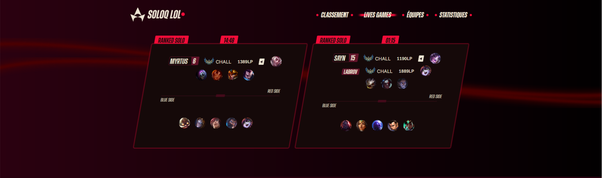
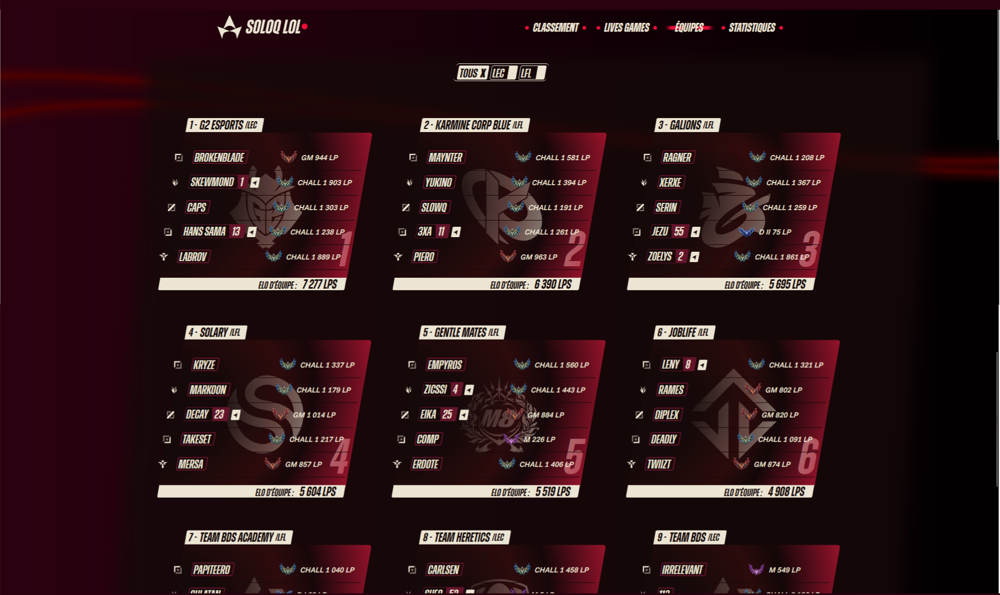
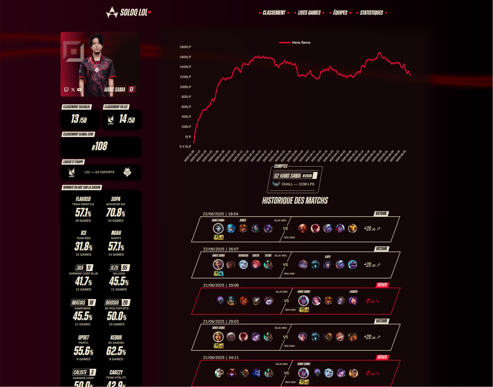

SoloQLOL est un site web à l'initiative de Trayton, 4eme streameur France. Le site regroupe des professionnels et streamers de League of Legends pour afficher leurs statistiques, rangs, équipes, leurs parties en direct ainsi que leur stream.
Les Lives games permettent de suivre les parties jouées en direct avec des statistiques telles que les champions, l'élo et si le joueur stream.
Chaque joueur professionnel fait partie d'une équipe, l'onglet équipe permet de suivre les statistiques d'une équipe et sa forme du moment.
Chaque streamers a une fiche personnalisé présentant ses statistiques, son historique de partie et son élo.
